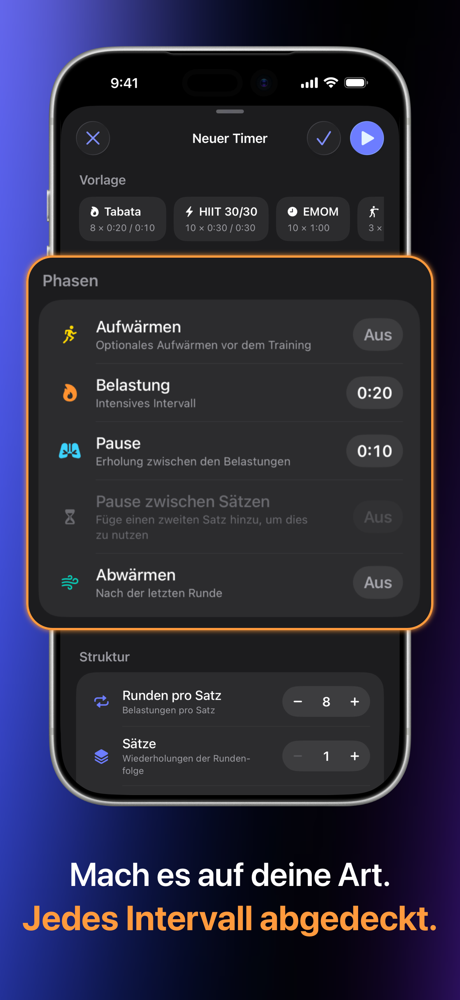
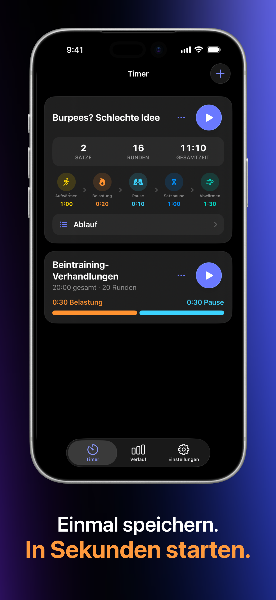
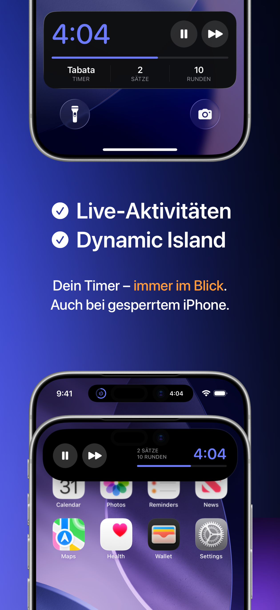
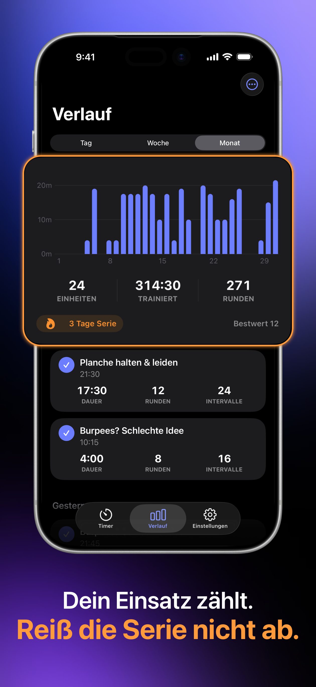
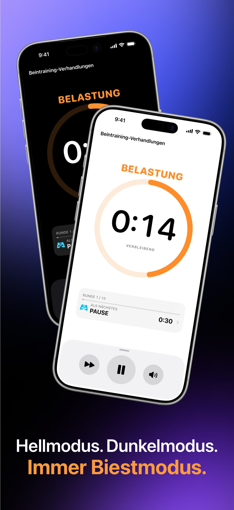

Jede Phase aufbauen
Legen Sie Aufwärmen, Arbeit, Erholung, Satzpausen, Abkühlen, Runden und Sätze fest. Beginnen Sie mit einer Vorlage oder gestalten Sie die Einheit ganz nach Ihren Wünschen.
Erstellen Sie das Workout, mit dem Sie tatsächlich trainieren, legen Sie Ihr Telefon weg und lassen Sie sich von klaren Audiohinweisen durch jede Runde führen.
 Von einem Athleten entwickelt
Von einem Athleten entwickelt
Alles, was Sie brauchen
Schnell genug für ein vierminütiges Tabata. Flexibel genug für Multi-Set-Zirkel, Boxrunden, Sprints und Ihre eigene Trainingsstruktur.
Legen Sie Aufwärmen, Arbeit, Erholung, Satzpausen, Abkühlen, Runden und Sätze fest. Beginnen Sie mit einer Vorlage oder gestalten Sie die Einheit ganz nach Ihren Wünschen.
Pfeifen, Gongs und gesprochene Hinweise halten Sie auf Trab, während der Bildschirm gesperrt ist und Ihre Musik weiterläuft.
Live-Aktivitäten auf dem iOS-Sperrbildschirm und der Dynamic Island halten Ihr Training jederzeit im Blick.
Speichern Sie Ihre Timer einmal, überprüfen Sie die gesamte Sequenz und starten Sie dann jede Routine direkt aus Ihrer Bibliothek.
Überprüfen Sie Einheiten nach Tag, Woche oder Monat und verfolgen Sie Ihre Trainingszeit, abgeschlossene Runden und Workout-Serien.
Ihre Timer, Einstellungen und der Trainingsverlauf bleiben auf Ihrem Gerät. Kein Kontozwang, keine Werbung und kein unnötiger Schnickschnack.
Einblicke in FourEver
Starke Phasenfarben, Fortschritt auf einen Blick und fokussierte Bedienelemente machen den Timer leicht ablesbar, ohne Sie aus der Einheit zu reißen.





Weitere Apps & Dienstprogramme
Tools, die mit demselben Fokus auf Leistung, Nutzen und Benutzerkontrolle entwickelt wurden.
Unabhängige Scrollrichtung und Mausbeschleunigungssteuerung für macOS. Wechseln Sie sofort zwischen der Standard-Zeigerbeschleunigung für die Arbeit und einer linearen 1:1-Verfolgung für Spiele, während Sie das Scrollen mit dem physischen Mausrad umkehren, ohne die Trackpad-Gesten zu beeinflussen.